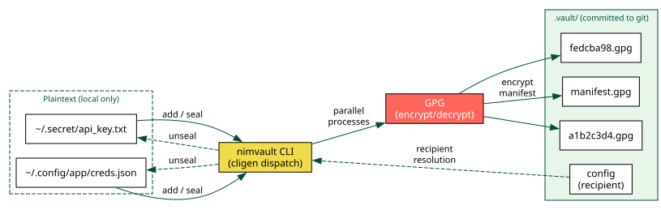
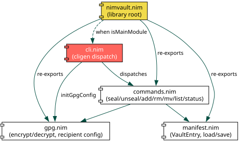

nimvault¶
- Author:
Architecture¶
nimvault is a single static binary that encrypts files into opaque GPG blobs
with randomized filenames. Only the encrypted blobs and an encrypted manifest
are committed to git; the original filenames and contents never appear in
version history.

Overview¶
nimvault stores sensitive files with opaque filenames and encrypted contents
using GPG. Both the original filenames and file contents are hidden from git
history: only random hex blob names and a GPG-encrypted manifest are committed.
The tool is designed for dotfile managers like chezmoi where secrets need to travel across machines via git without exposing their contents or even their names.
Key properties¶
- Opaque filenames
Each file is assigned a 16-character random hex ID generated from 8 bytes of cryptographic randomness (
std/sysrand).- Signed and verified
All blobs and the manifest are GPG-signed.
unsealverifies signatures and SHA-256 blob hashes before writing any plaintext to disk (atomic, fail-closed).- Parallel GPG
Encryption and decryption spawn GPG processes in parallel via
startProcessfor fast batch operations.- Portable paths
Paths under
$HOMEare stored with~/prefix so the manifest works across machines.- 3-tier recipient resolution
The GPG recipient is resolved from (1) CLI
--recipientflag, (2)NIMVAULT_GPG_RECIPIENTenvironment variable, or (3).vault/configfile. First non-empty value wins.- Zero runtime dependencies
Single static binary; only requires GPG on the system.
Module structure¶
The library is split into four focused modules, each with a single responsibility.

Quick checklist¶
Install Nim >= 2.0 and GPG
nimble install nimvaultcdinto a git repoCreate
.vault/configwithrecipient = YOUR_KEY_IDnimvault add ~/.secret/file.txtnimvault sealgit add .vault/ && git commitOn another machine:
git pull && nimvault unsealnimvault statusto verify sync state
Getting Started¶
Getting Started
Guides¶
Reference¶
Reference
Development¶
Development